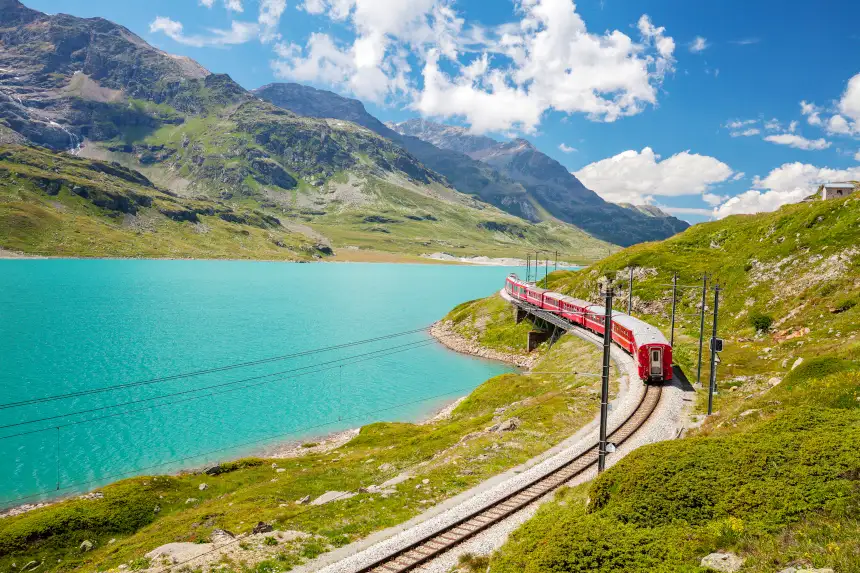
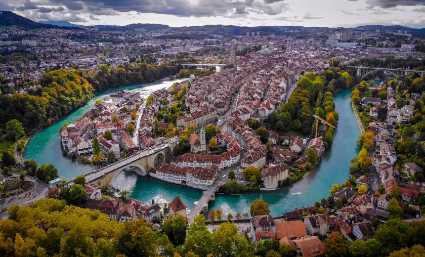

Lugares Turísticos
Os Alpes no Bernina Express
Ele parte da estação de Coira e atravessa o viaduto de Brusio, a passagem de Bernina e o vale de Engadina, um dos mais fascinantes da região. Desse trem panorâmico, você poderá observar as espetaculares paisagens suíças, incluídas as dos lagos Lej Pitschen, Lej Nair e Lago Branco. A rota também passa por St. Moritz, conhecida como o Topo do Mundo. O trajeto finaliza em Tirano, uma cidade italiana situada a cerca de 160 quilômetros de Milão. Um trajeto perfeito para fazer na Suíça tanto no inverno como no verão!
Berna Helicóptero
. Podemos reservar um passeio de helicóptero é a opção ideal para desbravar Berna, cidade banhada pelo rio Aar, e admirar do alto seus edifícios mais representativos, como a catedral gótica Berner Münster e o Bundeshaus, o Parlamento Federal da Suíça.
Lago dos quatros cantões

Localizado entre os cantões de Lucerna, Uri, Schwyz e Unterwalden, esse lago é cercado por montanhas majestosas e povoados repletos de história. Se você estiver procurando o que ver no centro histórico de Lucerna.
Zermatt e Cervin

uma pérola alpina situada aos pés do lendário Matterhorn, na fronteira entre a Itália e a Suíça. Desenhado pela primeira vez em 1865, seu perfil inspirou uma famosa marca de chocolate suíço